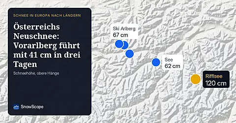

Schneebericht Österreich: Schneehöhen, Neuschnee und die Woche
In Österreich sind heute rund 27.250 km² Bergland weiß, 52 % der kartierten Berge und Hügel des Landes. Das sind 800 km² weniger als gestern. Das schneereichste Skigebiet ist Kaprun mit 67 cm auf den oberen Hängen. Bis zu 22 cm Neuschnee könnten in der kommenden Woche auf die schneereichsten Hänge fallen.
Die Live-Schneeprognose für Kaprun in der SnowScope-AppSchneehöhen, Pulverschnee-Alarme und 3D-Karte, gratis.Heute auf einen Blick
| Weiße Fläche | 27.250 km² |
|---|---|
| Anteil am Bergland | 52 % |
| Max. Neuschnee in 24 h | 4 cm |
| Max. Neuschnee in 3 Tagen | 8 cm |
| Nächste 3 Tage (schneereichste Hänge) | 22 cm |
| Nächste 7 Tage | 22 cm |
| Meist weiß ab | 1.200 m |
| Skigebiete mit Schnee oben | 261 von 277 |
Die letzten sieben Tage
Am 19. November waren rund 25.170 km² weiß, heute sind es 27.250 km².
Die Schneedecke wuchs in diesen Tagen um 2.080 km².
Der stärkste Dreitagesschneefall des Zeitraums erreichte 38 cm (bis 22. November).
Diese Saison im Vergleich zu einem normalen Jahr
1 der 5 schneereichsten Skigebiete liegen über ihrer üblichen Schneehöhe für den 25. November.
Kaprun: 22 cm auf etwa 1.894 m, ein normales Jahr hat 28 cm; Stubaier Gletscher: 38 cm auf etwa 2.450 m, ein normales Jahr hat 55 cm; Großglockner Heiligenblut: 11 cm auf etwa 2.070 m, ein normales Jahr hat 41 cm; Pitztaler Gletscher: 50 cm auf etwa 2.576 m, ein normales Jahr hat 51 cm; Weißsee Gletscherwelt: 39 cm auf etwa 2.019 m, ein normales Jahr hat 37 cm.
Diese Höhen gelten für eine Höhenlage jedes Bergs unterhalb des Gipfels.
In früheren Wintern kam der beste Schnee in Kaprun meist Anfang März / Ende März.
Die schneereichsten Skigebiete heute
Kaprun führt mit 67 cm auf den oberen Hängen.
Es folgen Stubaier Gletscher (64 cm), Großglockner Heiligenblut (55 cm), Pitztaler Gletscher (54 cm) und Weißsee Gletscherwelt (54 cm).
| Skigebiet | Oben | Neu, 3 Tage | Nächste 3 Tage | Gipfel |
|---|---|---|---|---|
| Kaprun | 67 cm | 4 cm | 18 cm | 3.024 m |
| Stubaier Gletscher | 64 cm | 8 cm | 15 cm | 3.208 m |
| Großglockner Heiligenblut | 55 cm | 4 cm | 22 cm | 2.905 m |
| Pitztaler Gletscher | 54 cm | 6 cm | 17 cm | 3.424 m |
| Weißsee Gletscherwelt | 54 cm | 4 cm | 21 cm | 2.555 m |
Wo der Schnee als Nächstes kommt
In den nächsten drei Tagen werden auf den schneereichsten Hängen bis zu 22 cm erwartet, über die Woche bis zu 22 cm.
Der schneereichste Tag dürfte der Donnerstag, 26. November werden, mit bis zu 22 cm.
In den letzten drei Tagen fiel der meiste Neuschnee in Vorarlberg, Kärnten und Tirol.
Die zweite Woche könnte dort, wo es am meisten schneit, bis zu 37 cm bringen.
Schnee nach Höhe
Höhe für Höhe: 500-1.000 m: im Schnitt 0 cm, 7 % weiß; 1.000-1.500 m: im Schnitt 3 cm, 55 % weiß; 1.500-2.000 m: im Schnitt 10 cm, 98 % weiß; 2.000-2.500 m: im Schnitt 19 cm, 100 % weiß; über 2.500 m: im Schnitt 30 cm, 100 % weiß.
Ab etwa 1.200 m ist der Boden meist weiß.
Eine Reise planen
Über 1.500 m ist der Boden fast ganz weiß (98 % bedeckt): Die Pisten dort haben eine durchgehende Unterlage.
Zwischen 1.000 m und 1.500 m ist die Decke lückenhaft, rund 55 % weiß: Gras und Steine zwischen dem Schnee.
Die Skigebiete mit den höchsten Liften sind die sicherste Wahl: Pitztaler Gletscher (3.424 m), Stubaier Gletscher (3.208 m) und Kaprun (3.024 m).
Wer den Tag wählen kann, fährt nach dem Donnerstag, 26. November: Dann kann sich der Neuschnee setzen und die Straßen sind geräumt.
Tag für Tag
- Mittwoch, 25. November · 27.250 km² weiß, bis zu 8 cm Neuschnee in drei Tagen, vorn Kaprun (67 cm)
- Dienstag, 24. November · 28.170 km² weiß, bis zu 25 cm Neuschnee in drei Tagen, vorn Stubaier Gletscher (65 cm)
- Montag, 23. November · 31.690 km² weiß, bis zu 32 cm Neuschnee in drei Tagen, vorn Stubaier Gletscher (67 cm)
- Sonntag, 22. November · 31.340 km² weiß, bis zu 38 cm Neuschnee in drei Tagen, vorn Stubaier Gletscher (67 cm) · Österreichs Schneebedeckung um 11.600 km² in einer Woche gestiegen
- Samstag, 21. November · 29.110 km² weiß, bis zu 30 cm Neuschnee in drei Tagen, vorn Stubaier Gletscher (63 cm) · Österreich führt die Alpen an: 56 Prozent Schneebedeckung gegen 7 Prozent in Deutschland
- Freitag, 20. November · 22.850 km² weiß, bis zu 26 cm Neuschnee in drei Tagen, vorn Rifflsee (120 cm) · Österreichs Neuschnee: Vorarlberg führt mit 41 cm in drei Tagen
- Donnerstag, 19. November · 25.170 km² weiß, bis zu 19 cm Neuschnee in drei Tagen, vorn Stubaier Gletscher (60 cm) · Österreich steht vor großem Schneefall: 55 cm möglich in sieben Tagen
Fragen und Antworten
Liegt in Österreich gerade Schnee?
Ja. Rund 27.250 km² Bergland sind weiß, 52 % der kartierten Berge. Das schneereichste Skigebiet ist Kaprun mit 67 cm auf den oberen Hängen.
Wo liegt in Österreich heute am meisten Schnee?
Kaprun führt mit 67 cm auf den oberen Hängen. Es folgen Stubaier Gletscher (64 cm), Großglockner Heiligenblut (55 cm) und Pitztaler Gletscher (54 cm).
Schneit es in Österreich diese Woche?
In den nächsten drei Tagen werden auf den schneereichsten Hängen bis zu 22 cm erwartet, über die Woche bis zu 22 cm. Der schneereichste Tag dürfte der Donnerstag, 26. November werden, mit bis zu 22 cm.
Ab welcher Höhe liegt in Österreich Schnee?
Ab etwa 1.200 m ist der Boden meist weiß.
Wie viel Neuschnee fiel in Österreich in den letzten drei Tagen?
Bis zu 8 cm auf den schneereichsten Hängen, davon 4 cm in den letzten 24 Stunden. Mindestens 5 cm fielen auf rund 3.300 km². In den letzten drei Tagen fiel der meiste Neuschnee in Vorarlberg, Kärnten und Tirol.
Wie viele Skigebiete in Österreich haben Schnee?
261 der 277 beobachteten Skigebiete haben heute oben Schnee. Schnee oben heißt nicht, dass die Lifte laufen: vorher beim Skigebiet nachsehen.
Wann ist die beste Zeit zum Skifahren in Österreich?
In früheren Wintern kam der beste Schnee in Kaprun meist Anfang März / Ende März.
Ist die Saison in Österreich gut gestartet?
1 der 5 schneereichsten Skigebiete liegen über ihrer üblichen Schneehöhe für den 25. November.
Artikel über Österreich

Österreich hat in sieben Tagen 11.600 km² Schnee hinzugewonnen. Stubaier Gletscher führt mit 67 cm an. Daten vom 22. November 2026.

Österreich hat Schnee auf 56 Prozent der gemessenen Flächen am 21. November, weit vor Deutschland mit 7 Prozent. Vorarlberg erhielt in drei Tagen 47 cm Neuschnee.

Vorarlberg erhielt in den drei Tagen bis 20. November den meisten Neuschnee in Österreich. Bis zu 26 cm fielen großflächig, als ein Sturm über die Alpen zog.